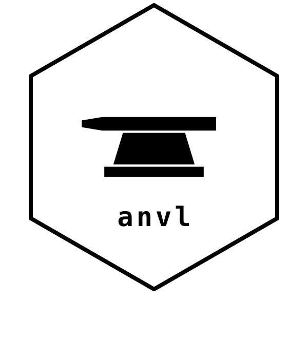

Depending on anvl
Source:vignettes/articles/depending-on-anvl.Rmd
depending-on-anvl.RmdThis article is for authors of packages that depend on {anvl}. It explains why tests that run {anvl} code cannot run on CRAN, how to skip them there, and where they run instead.
Why PJRT Tests Cannot Run on CRAN
{anvl} compiles and runs programs through PJRT plugins, one for each
platform (CPU and CUDA). The plugins do not come with the {pjrt} package
but are downloaded on first use (see the Installation article), and a
non-interactive session such as R CMD check downloads them
only when the PJRT_INSTALL environment variable is
1. CRAN’s check machines neither have a plugin nor set
PJRT_INSTALL, so a test that runs {anvl} code on the
default "pjrt" backend fails there with an error saying
that the plugin needs to be downloaded.
Skipping the Tests
Start each such test with skip_if_no_plugin():
test_that("my_model() recovers the coefficients", {
anvl::skip_if_no_plugin()
fit <- my_model(x, y)
expect_equal(coef(fit), beta, tolerance = 1e-4)
})It skips the test unless the plugin is downloaded, the
PJRT_PLUGIN_PATH_<PLATFORM> environment variable
points to one, or PJRT_INSTALL=1 allows downloading it. By
default it asks for the plugin of the platform of the default device,
which is where a test that names no device runs; a test that needs
another one names it, e.g. skip_if_no_plugin("cuda").
Use it instead of skip_on_cran(). That one decides by
the NOT_CRAN environment variable, which says where the
check runs, while skip_if_no_plugin() decides by whether
the plugin is there, so the tests run wherever it is. To run them in
your own CI, set PJRT_INSTALL=1 or call
anvl::install_anvl() before the check.
Reverse Dependency Checks
Before each release of {anvl}, we run the reverse dependency checks,
R CMD check of the packages that depend on {anvl} against
the new version, with the PJRT plugins installed. The tests guarded by
skip_if_no_plugin() therefore run there, even though CRAN
skips them, so a change in {anvl} that breaks your package is caught
before the release.